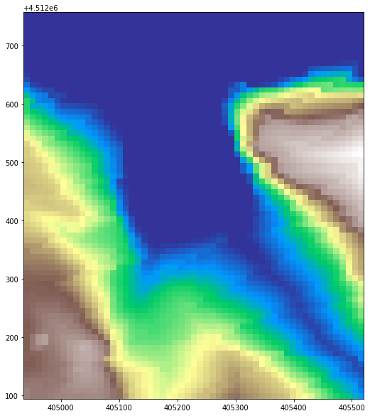

Codice
import pathlib
import pandas as pd
import geopandas as gpd
import rasterio as rio
from rasterio.plot import show, show_hist
import matplotlib.pyplot as plt
from shapely.geometry import Point31 marzo 2022
Un po’ di tempo fa ho affrontato in un mio articolo il problema dell’aggiunta della coordinata altimetrica ad un dataset di punti usando QGIS. In questo JupyterNotebook affronterò il problema usando Python.
Per raggiungere l’obiettivo userò essenzialmente geopandas, shapely e rasterio. In verità tra gli import troverai anche pathlib e matplotlib ma non sono essenziali per la corretta riuscita del procedimento.
Come DEM ho usato un tile del progetto TIN Italy a sua volta ritagliato e su cui ho generato con QGIS quattro punti random.
E’ il caso più semplice: ho un certo insieme di punti e tutti devono acquisire la stezza Z.
| fid | geometry | |
|---|---|---|
| 0 | 1.0 | POINT (405270.221 4512122.298) |
| 1 | 2.0 | POINT (405226.798 4512675.034) |
| 2 | 3.0 | POINT (404962.921 4512294.350) |
| 3 | 4.0 | POINT (404991.893 4512570.669) |
Usando has_z ho verificato se i quattro punti sono effettivamente piani e quel False per ognuno di loro mi conferma che lo sono. Non resta che aggiungere la terza quota.
point_z_list = []
for _index, row in point_data.iterrows():
point_geometry = row.geometry.coords
# Estraggo la coppia di coordinate
coordinates_plane = point_geometry[0]
# Creo una lista con la coppia di coordinate ed aggiungo la z
coordinates_3d = list(coordinates_plane)
coordinates_3d.append(10)
# Converto la lista in PointZ ed aggiungo l'oggetto alla lista di punti
point_geometry_3d = Point(tuple(coordinates_3d))
point_z_list.append([row.fid, point_geometry_3d])
# Ricostruisco il GeoDataFrame di punti
df = pd.DataFrame(point_z_list)
df.rename(columns={0:'fid', 1: 'geometry'}, inplace=True)
gdf = gpd.GeoDataFrame(df, geometry=df.geometry, crs=point_data.crs)
gdf| fid | geometry | |
|---|---|---|
| 0 | 1.0 | POINT Z (405270.221 4512122.298 10.000) |
| 1 | 2.0 | POINT Z (405226.798 4512675.034 10.000) |
| 2 | 3.0 | POINT Z (404962.921 4512294.350 10.000) |
| 3 | 4.0 | POINT Z (404991.893 4512570.669 10.000) |
Interrogando i dati nuovamente con has_z risultano essere 3D.
Caso più complesso e sicuramente corrispondente alla realtà.
Il primo step è leggere la fonte dati raster. In verità dovrei leggere anche la fonte vettoriale ma siccome l’ho già fatto nell’esempio precedente evito di duplicare il passaggio.
<open DatasetReader name='/home/max/DEV/Personal/PyGISBlog/sample_data/add_z/clip_dem.tif' mode='r'>
<AxesSubplot:>L’istogramma delle quote ci consente di capire che c’è una forte presenza di quote zero che corrispondono all’azzurro del raster precedentemente stampato.
point_z_list = []
for _index, row in point_data.iterrows():
point_geometry = row.geometry.xy
# Estraggo la coppia di coordinate
x_coords = point_geometry[0][0]
y_coords = point_geometry[1][0]
# Individuo la riga e la colonna del raster in cui ricade
# la coppia di coordinate.
line, column = raster_data.index(x_coords, y_coords)
# Estraggo il valore della cella dall'intersezione della
# riga e colonna individuate al passaggio precedente.
# E' il valore di quota che sto cercando.
pixel_value = raster_data.read(1)[line, column]
# Creo il PointZ ed aggiungo l'oggetto alla lista di punti
point_geometry_3d = Point((x_coords, y_coords, pixel_value))
point_z_list.append([row.fid, point_geometry_3d])
# Ricostruisco il GeoDataFrame di punti
df = pd.DataFrame(point_z_list)
df.rename(columns={0:'fid', 1: 'geometry'}, inplace=True)
gdf = gpd.GeoDataFrame(df, geometry=df.geometry, crs=point_data.crs)
gdf| fid | geometry | |
|---|---|---|
| 0 | 1.0 | POINT Z (405270.221 4512122.298 53.347) |
| 1 | 2.0 | POINT Z (405226.798 4512675.034 0.000) |
| 2 | 3.0 | POINT Z (404962.921 4512294.350 65.504) |
| 3 | 4.0 | POINT Z (404991.893 4512570.669 18.646) |
Anche in questo caso la verifica sulla tridimensionalità del GeoDataFrame ha dato esito positivo.
Aggiornamento del 07-04-2022
Procedura simile alla precedente con la sola differenza legata al tipo di libreria con cui vado a leggere il DEM; andrò ad usare infatti rioxarray estensione di xarray.
<xarray.DataArray (y: 72, x: 55)>
array([[ 0. , 0. , 0. , ..., 0. , 0. , 0. ],
[ 0. , 0. , 0. , ..., 0. , 0. , 0. ],
[ 0. , 0. , 0. , ..., 0. , 0. , 0. ],
...,
[69.77669 , 69.81791 , 69.8414 , ..., 15.89126 , 13.74339 , 8.158463],
[70.76064 , 69.98181 , 69.8414 , ..., 16.82376 , 13.96572 , 10.95792 ],
[70.76064 , 69.98181 , 69.95621 , ..., 19.76735 , 16.77215 , 13.75869 ]],
dtype=float32)
Coordinates:
band int64 1
* x (x) float64 4.049e+05 4.05e+05 4.05e+05 ... 4.055e+05 4.055e+05
* y (y) float64 4.513e+06 4.513e+06 ... 4.512e+06 4.512e+06
spatial_ref int64 0
Attributes:
STATISTICS_MAXIMUM: 87.830078125
STATISTICS_MEAN: 25.813233406838
STATISTICS_MINIMUM: 0
STATISTICS_STDDEV: 26.3760348731
STATISTICS_VALID_PERCENT: 100
_FillValue: -9999.0
scale_factor: 1.0
add_offset: 0.0array([[ 0. , 0. , 0. , ..., 0. , 0. , 0. ],
[ 0. , 0. , 0. , ..., 0. , 0. , 0. ],
[ 0. , 0. , 0. , ..., 0. , 0. , 0. ],
...,
[69.77669 , 69.81791 , 69.8414 , ..., 15.89126 , 13.74339 , 8.158463],
[70.76064 , 69.98181 , 69.8414 , ..., 16.82376 , 13.96572 , 10.95792 ],
[70.76064 , 69.98181 , 69.95621 , ..., 19.76735 , 16.77215 , 13.75869 ]],
dtype=float32)array(1)
array([404941.257791, 404951.883373, 404962.508955, 404973.134536,
404983.760118, 404994.3857 , 405005.011282, 405015.636864,
405026.262445, 405036.888027, 405047.513609, 405058.139191,
405068.764773, 405079.390355, 405090.015936, 405100.641518,
405111.2671 , 405121.892682, 405132.518264, 405143.143845,
405153.769427, 405164.395009, 405175.020591, 405185.646173,
405196.271755, 405206.897336, 405217.522918, 405228.1485 ,
405238.774082, 405249.399664, 405260.025245, 405270.650827,
405281.276409, 405291.901991, 405302.527573, 405313.153155,
405323.778736, 405334.404318, 405345.0299 , 405355.655482,
405366.281064, 405376.906645, 405387.532227, 405398.157809,
405408.783391, 405419.408973, 405430.034555, 405440.660136,
405451.285718, 405461.9113 , 405472.536882, 405483.162464,
405493.788045, 405504.413627, 405515.039209])array([4512752.806342, 4512743.597027, 4512734.387712, 4512725.178397,
4512715.969081, 4512706.759766, 4512697.550451, 4512688.341135,
4512679.13182 , 4512669.922505, 4512660.71319 , 4512651.503874,
4512642.294559, 4512633.085244, 4512623.875928, 4512614.666613,
4512605.457298, 4512596.247983, 4512587.038667, 4512577.829352,
4512568.620037, 4512559.410722, 4512550.201406, 4512540.992091,
4512531.782776, 4512522.57346 , 4512513.364145, 4512504.15483 ,
4512494.945515, 4512485.736199, 4512476.526884, 4512467.317569,
4512458.108253, 4512448.898938, 4512439.689623, 4512430.480308,
4512421.270992, 4512412.061677, 4512402.852362, 4512393.643047,
4512384.433731, 4512375.224416, 4512366.015101, 4512356.805785,
4512347.59647 , 4512338.387155, 4512329.17784 , 4512319.968524,
4512310.759209, 4512301.549894, 4512292.340578, 4512283.131263,
4512273.921948, 4512264.712633, 4512255.503317, 4512246.294002,
4512237.084687, 4512227.875372, 4512218.666056, 4512209.456741,
4512200.247426, 4512191.03811 , 4512181.828795, 4512172.61948 ,
4512163.410165, 4512154.200849, 4512144.991534, 4512135.782219,
4512126.572903, 4512117.363588, 4512108.154273, 4512098.944958])array(0)
new_point_z_list = []
for _index, row in point_data.iterrows():
point_geometry = row.geometry.xy
# Estraggo la coppia di coordinate
x_coords = point_geometry[0][0]
y_coords = point_geometry[1][0]
# Individuo la riga e la colonna del DataArray in cui ricade
# la coppia di coordinate.
value = new_raster_data.sel(x=x_coords, y=y_coords, method="nearest")
# Estraggo il valore della cella dall'intersezione della
# riga e colonna individuate al passaggio precedente.
# E' il valore di quota che sto cercando.
pixel_value = value.data
# Creo il PointZ ed aggiungo l'oggetto alla lista di punti
point_geometry_3d = Point((x_coords, y_coords, pixel_value))
new_point_z_list.append([row.fid, point_geometry_3d])
# Ricostruisco il GeoDataFrame di punti
new_df = pd.DataFrame(new_point_z_list)
new_df.rename(columns={0:'fid', 1: 'geometry'}, inplace=True)
new_gdf = gpd.GeoDataFrame(new_df, geometry=new_df.geometry, crs=point_data.crs)
new_gdf| fid | geometry | |
|---|---|---|
| 0 | 1.0 | POINT Z (405270.221 4512122.298 53.347) |
| 1 | 2.0 | POINT Z (405226.798 4512675.034 0.000) |
| 2 | 3.0 | POINT Z (404962.921 4512294.350 65.504) |
| 3 | 4.0 | POINT Z (404991.893 4512570.669 18.646) |
Quelli riportati sono solo due dei metodi possibili per raggiungere l’obiettivo, sono quelli che ho individuato io. Se ne conosci altri, o se hai indicazioni da dare per migliorare il post, fallo scrivendo in Discussioni. Nota bene che per 2 è indispensabile che raster e punti abbiano lo stesso sistema di riferimento!
Se vuoi ricevere aggiornamenti sui prossimi articoli iscriviti alla newsletter!
Segui il canale Telegram CaffèGIS - I GIS a supporto dei processi evolutivi territoriali per ricevere aggiornamenti su iniziative ed informazioni a tema GIS.
Se trovi interessanti i miei articoli offrimi una birra!
Alla prossima!